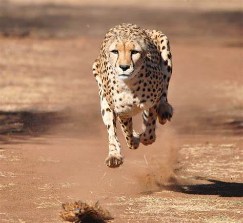

|
|
One of the most recognizable animals in kenya is the cheetah. These spotty cats-each with their on unique patterns-are skilled hunters-in part because of their natural habitat speed and agility. In fact,cheetahs are the fastest animals on earth .They can accelerate from zero to 60 miles per hour in just three seconds.Another interesting cheetah fact?Unlike lions,tigers,jaguars, and leopards ,cheetahs cant roar-they can only purr. These cats live and hunt in open grasslands across Africa.They can be found in countries including Kenya,Algeria SouthAfrica and Niger The International Union for th Conservation of Nature(IUCN)classes cheetahs as vulnerable. This means the species is at high risk of extinction in the wild.There are just 6,517 mature cheetahs left in the wild,and their population is decreasing . Cheetahs are at particular risk from habitat loss because they need such a large range. Most cheetahs live in unprotected areas,where they come into conflict with famers |